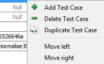
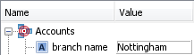

Perform an interactive test
Users can run interactive tests in either the Tree or Table view tab.
Tests on components can be run interactively, by entering test cases manually, or by importing .csv or .xml-formatted test cases into the Input section of the Table View tab in the Interactive Tester. By selecting one or all of the trace icons, the test can produce a trace file that details the pathways and values of the characteristics as they are read and written to.
| The Interactive Tester uses Java to provide a logical test of the functionality of a component. |
To run an interactive test
- Within any runtime component editor, click on the Test button
 or right click the name of the component in the Explorer window and select Test. The Interactive Tester Editor is displayed.
or right click the name of the component in the Explorer window and select Test. The Interactive Tester Editor is displayed. - The fields requiring information are displayed in the Input (upper) section of the editor. Type the relevant data into the input area or click on the Import button to import a .csv or .xml-formatted test case into the editor.
| When a value is typed into a date field, the Interactive Tester will only update the value to match the Date Format, once the focus has been moved from the cell (either by pressing enter, or by clicking with your cursor outside of the cell). |
- Instead of typing in a value, you can assign a Null value to a string field. Null is assigned to all numeric and date fields by default.
- To change how Null values are handled, make a selection from the Null Handling drop down in the Properties window.
-
The default is set to Error on Null, which causes an error that can be seen in detail when tracing is enabled (if tracing is disabled, the error can also be seen but will not contain as much detail); but it can be changed to Use Default Values, which causes the studio to use the default values; if tracing is enabled, the characteristic(s) which used the default value(s) can be tracked.
The Default Values used inType Value String empty Integer 0 Decimal/Float 0.00 Date 1 Jan 1970 For information on how to assign Null values see Using the Interactive Tester with Null Values.
|
When Null values are supplied, the Interactive Tester log will include additional errors that do not specifically name the characteristic with invalid data. Subsequent errors in the log will identify the relevant characteristics; these error messages provide the full runtime error tracing. Below is an example error message: 'ERROR Unable to create an appropriate value for characteristic with external name "[null value for characteristic at index 0 and array index 0]" in data source "Tester"' The Null Handling property is not linked to the DA null handling solution property. For consistency, it is recommended that the property in the Interactive Tester is set to the same value as the solution property. |
|
Differences Between Decision Agent runtime and Interactive Tester within Null Handling Interactive Tester The Interactive Tester cannot distinguish if data is from a working storage (Logical Data Source) or from a Physical Logical Data Source (Call Interface). When the following are set using Null Handling in the Properties window, Interactive Tester will:
Decision Agent runtime Decision Agent runtime can differentiate if data is from a working storage (Logical Data Source) or from a Physical Logical Data Source (Call Interface). For situations where a Custom Default Value component is not used:
|
|
The maximum number of test cases that can be used in a single test is 1000. |
- Enter the second set of values.
- You can also add a second set of input values by duplicating an existing column, and modifying the new column as desired. To duplicate a column, you can select Duplicate from the tester toolbar, or right click on the column and select Duplicate Test Case:

-
You can copy input values from Excel by copying the values in Excel, then, in the studio, right clicking on the column in the tester into which you'd like to copy the values and selecting Paste from the context menu.

You can also copy values on their own or with characteristic names from the studio and paste into Excel by highlighting what you'd like to copy, right clicking and using the context menu and pasting into Excel.
When results are copied from the studio, the headers will automatically be included.
Copying from or pasting to non-existing array elements or read-only fields is not supported; the copy/paste function can only be used for fields where values can be populated. Therefore it is recommended to ensure that the full data structure is generated before copying and/or pasting these cells.
- You can move test cases in the Table View tab by right clicking on the test case you'd like to move and selecting Move left or Move right, as appropriate, from the context menu. More than one test case can be selected and moved at a time, if required.
- To invoke a full trace, (trace pathways, trace characteristics reads, and trace characteristic writes) use the three Trace buttons
 .
. - Click on the Execute Test button to begin running the test.


{kind=link}
{kind=link}
{kind=link}
|
The behaviour of the Reset function in Interactive Tester has changed. For example, if the Reset function in a Derived Data Script is being used to reset an array element of size 10: RESET( 'LDS.example_array'[1] ) When this script is run using Interactive Tester only the above array element will be displayed in the Inputs Table of the editor now instead of all the array elements, (in this example 1-10). |
The results of the test will appear in the Results area of the Table View tab in the Interactive Tester editor.
Interactive tests on components can be run by entering test cases manually or by importing .csv or .xml-formatted test cases into the Input section of the Tree View tab in the Interactive Tester. By selecting one or all of the trace icons, the test can produce a trace file that details the pathways and values of the characteristics as they are read and written to.
To run an interactive test
- Within any component editor, click on the Test button or select the name of the component in the Explorer window and select Test. The Interactive Tester Editor is displayed.
- Select the Tree View tab. The Tree View tab in the Interactive Tester Editor is displayed.
- Input characteristics that require data adding to them are displayed in the Input area of the editor.

{kind=link}
| When a value is typed into a date field, the Interactive Tester will only update the value to match the Date Format, once the focus has been moved from the cell (either by pressing enter, or by clicking with your cursor outside of the cell). |
- Type the relevant data into these fields. Refer to the Entering data using the Quick Data Entry topic to see how to enter data for groups of characteristics.
- For those fields that are dynamic arrays, elements will need to be added in order for you to be able to enter data into the leaf node of the array element you require. Refer to the Using Interactive Tester with dynamic arrays topic for more information.
- To do this, right click on the dynamic array and select Add Element to create the structure of the data you require, right click on the dynamic array and select Paste to add elements from a copied array or click on the Import button to import a .csv or .xml-formatted test case into the editor.
- If a field's value should be set to Null, assign a Null value to the field by right clicking on it and selecting Set value to Null.
- To add an additional test case, click on the New button. A new test case is added.
- Enter the set of values as required.
- To change how Null values are handled, make a selection from the Null Handling drop down in the Properties window.
{kind=link}
|
When Null values are supplied, the Interactive Tester log will include additional errors that do not specifically name the characteristic with invalid data. Subsequent errors in the log will identify the relevant characteristics; these error messages provide the full runtime error tracing. Below is an example error message: 'ERROR Unable to create an appropriate value for characteristic with external name "[null value for characteristic at index 0 and array index 0]" in data source "Tester"' The Null Handling property is not linked to the DA null handling solution property. For consistency, it is recommended that the property in the Interactive Tester is set to the same value as the solution property. |
-
The default is set to Error on Null, which causes an error that can be seen in detail when tracing is enabled (if tracing is disabled, the error can also be seen but will not contain as much detail); but it can be changed to Use Default Values, which causes the studio to use the default values; if tracing is enabled, the characteristic(s) which used the default value(s) can be tracked.
The Default Values used inType Value String empty Integer 0 Decimal/Float 0.00 Date 1 Jan 1970 For information on how to assign Null values see Using the Interactive Tester with Null Values.
|
Differences Between Decision Agent runtime and Interactive Tester within Null Handling Interactive Tester The Interactive Tester cannot distinguish if data is from a working storage (Logical Data Source) or from a Physical Logical Data Source (Call Interface). When the following are set using Null Handling in the Properties window, Interactive Tester will:
Decision Agent runtime Decision Agent runtime can differentiate if data is from a working storage (Logical Data Source) or from a Physical Logical Data Source (Call Interface). For situations where a Custom Default Value component is not used:
|
- To invoke a full trace (trace pathways, trace characteristics reads, and trace characteristic writes) use the three Trace buttons .
- Click on the Execute Test button to begin running the test.
The results of the test will appear in the Results area of the Tree View tab in the Interactive Tester editor. You can choose to export the input data and the results data using the Export function.